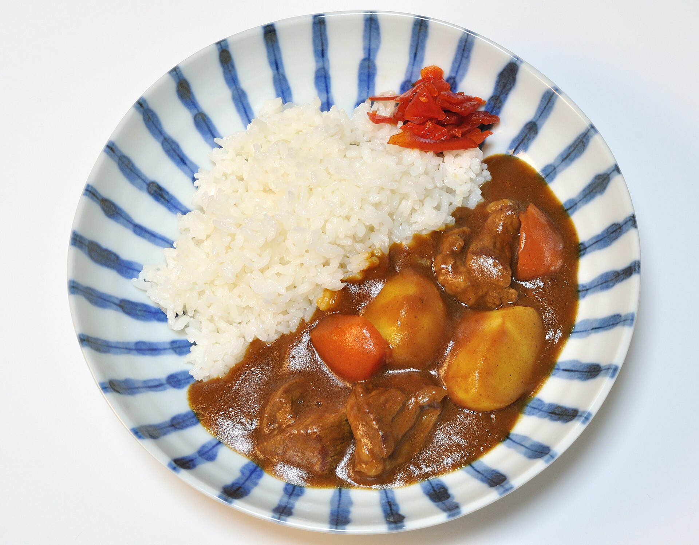

Japanese curry rice is a comforting, mildly spiced dish featuring tender meat and vegetables simmered in a rich, savory curry sauce and served over fluffy steamed rice. Simple to prepare and deeply satisfying, it's a beloved home-cooked meal that's perfect for busy weeknights or cozy family dinners.